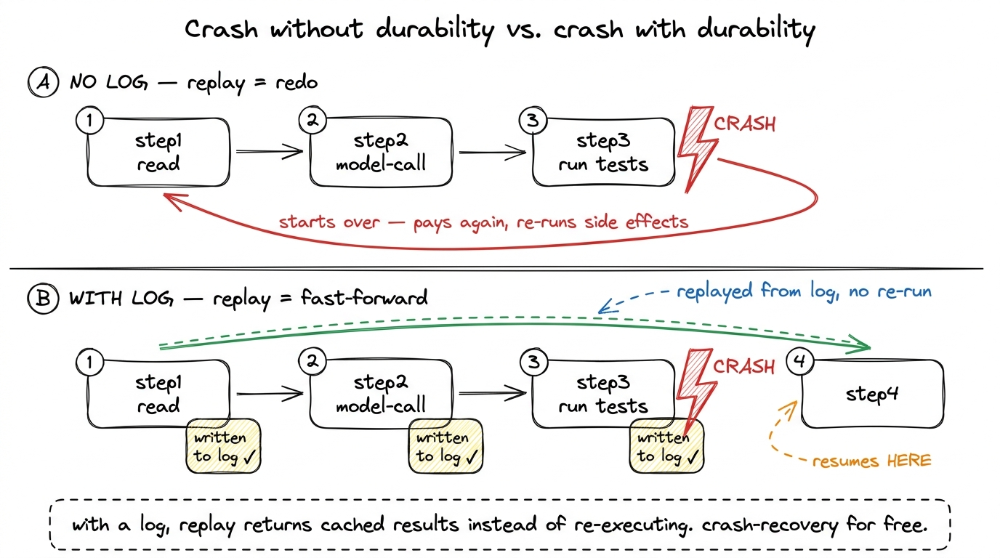
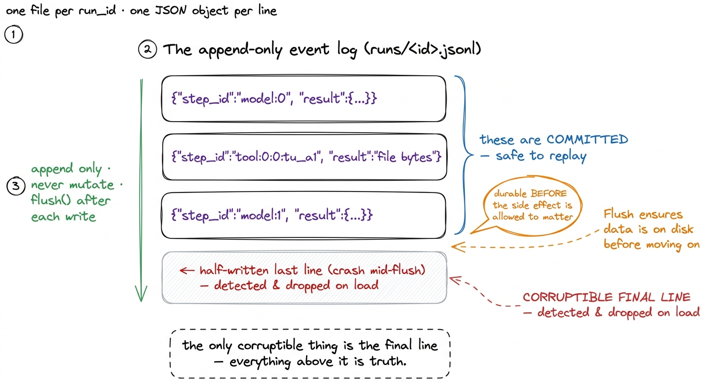
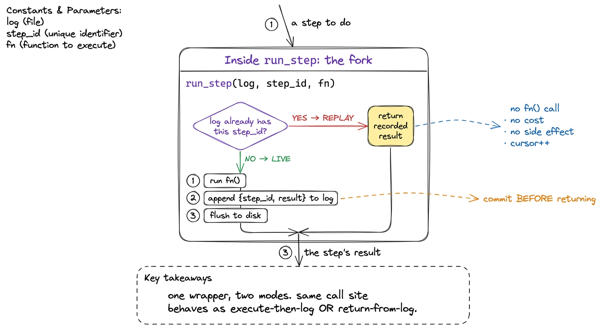
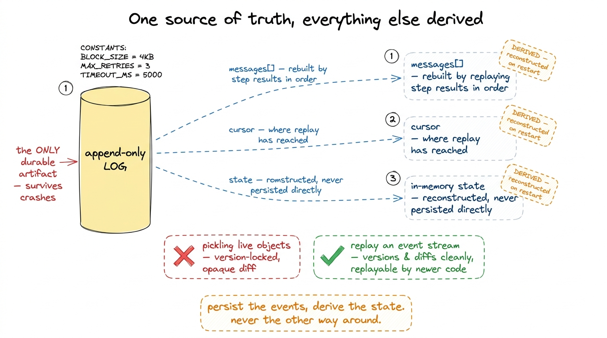
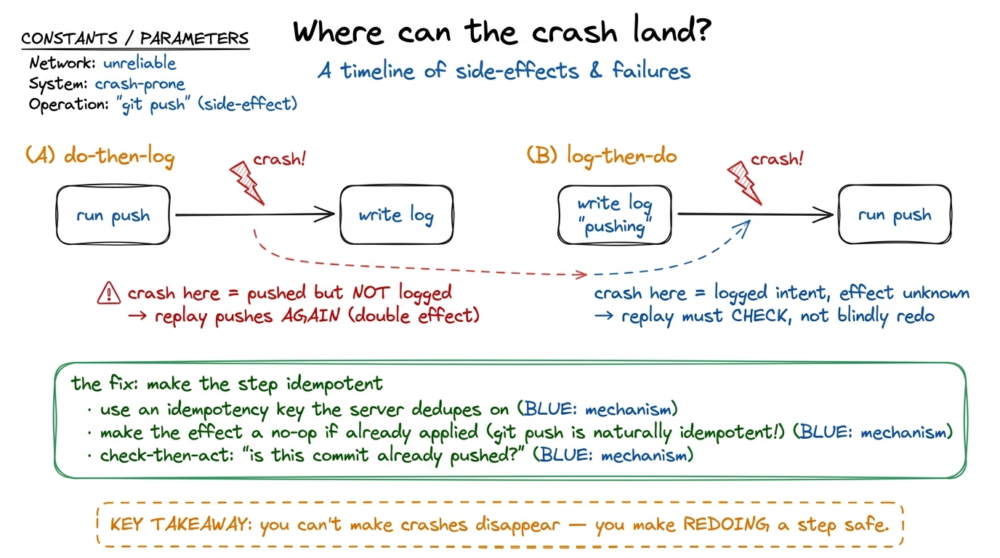

Durable execution & checkpointing DURABLE
Here is a failure mode that will bite you exactly once, and then you will never forget it. Your agent is twelve turns deep into a real task. It has read forty files, run the test suite twice, made three edits, and it is halfway through calling the model for the thirteenth time — a call that already cost you a few cents in input tokens — when your laptop lid closes, the SSH session drops, or an unhandled exception three layers down takes the process with it. You restart. And the agent has no idea any of that happened. It starts over from the user's original request, reads the same forty files, re-runs the same tests, and cheerfully re-applies edits it already applied. You paid twice, you waited twice, and if any of those tool calls touched the outside world — pushed a commit, posted a comment, charged a card — you did it twice too.
The bare loop we built is a beautiful thing, but it lives entirely in RAM. Kill the process and the messages array — which is the agent's memory — evaporates. Layer 4 is where we fix that. The idea has a name borrowed from the databases-and-workflows world: durable execution. And the surprising part is how little code it takes.
The core move: every turn and every tool call is a step
The whole trick is to stop thinking of your agent as one long-running function and start thinking of it as a sequence of discrete steps, where each step is something that (a) might be expensive, (b) might have a side effect, and (c) produces a result we can write down. A model call is a step. Each tool call is a step. That's it — those are the two kinds of thing an agent does.
Once a step completes, we persist its result to a log before doing anything else. Then — and this is the entire payoff — if the process dies and restarts, we replay the recorded steps: instead of re-running a step we've already done, we hand back its cached result and move on. Replay is fast, free, and side-effect-free, because it isn't really executing anything — it's reading history. The agent fast-forwards through everything it already did and picks up precisely where it stopped.

figure rendering · Without a log, a crash means starting over — paying and re-side-effectThis is the same idea that powers systems like Temporal and DBOS: application code that survives crashes not by being careful, but by recording every meaningful step so the runtime can replay its way back to the present.1 In Temporal's language this is a "workflow" of "activities"; in DBOS it's durable functions backed by Postgres. We are building the miniature, agent-shaped version of the same pattern — you do not need a distributed workflow engine to get 90% of the benefit for a coding agent. We are just applying it to the one loop that matters to us.
The smallest thing that shows it: an append-only event log
Let me make it concrete. The persistence layer is an append-only log — a list of events we only ever add to, never mutate. For a single agent run it can be as simple as a JSONL file (one JSON object per line) or a SQLite table. Each event records what step it was, its inputs, and its result.
import json, hashlib, pathlib
class EventLog:
def __init__(self, run_id):
self.path = pathlib.Path(f"runs/{run_id}.jsonl")
self.path.parent.mkdir(exist_ok=True)
# replay: load everything already committed for this run
self.events = []
if self.path.exists():
self.events = [json.loads(l) for l in self.path.read_text().splitlines()]
self.cursor = 0 # how far into the log replay has advanced
def append(self, event):
with self.path.open("a") as f:
f.write(json.dumps(event) + "\n")
f.flush() # get it onto disk before we act on it
self.events.append(event)
figure rendering · The event log is a JSONL file that only ever grows: one committed stepTwo details carry the whole design. The log is append-only, so it is trivially crash-safe — a half-written last line is the only thing that can be corrupt, and we can detect and drop it on load. And we flush() before the step's side effect is allowed to matter, so the record of "we are about to do X" is durable before X escapes into the world. (More on that ordering in a moment — it's the subtle part.)
Wrapping a step so it records or replays
Now the heart of Layer 4: a single wrapper that every model call and every tool call goes through. On the first run it executes the step and logs the result. On replay it skips execution and returns the logged result. The wrapper decides which, based on whether the log already contains this step.
def run_step(log, step_id, fn):
"""Execute fn() once, durably. On replay, return the cached result."""
# Are we replaying a step the log already has?
if log.cursor < len(log.events):
recorded = log.events[log.cursor]
assert recorded["step_id"] == step_id, "log diverged from code!"
log.cursor += 1
return recorded["result"] # fast-forward: no execution, no side effect
# Live execution: run it for real, then commit the result.
result = fn()
log.append({"step_id": step_id, "result": result})
log.cursor += 1
return resultRead what this buys you. Every step now has a stable step_id and passes through run_step. First time through, log.cursor has caught up to the end of the log, so we take the live branch: run fn, append the result, return it. After a crash and restart, we rebuild the EventLog from disk, and now log.cursor starts at zero while log.events is full — so the first N calls to run_step take the replay branch, each returning its recorded result instantly, until the cursor catches up to where we crashed. From that point on, we're live again. The agent didn't need to know it died. The loop just ran, and run_step quietly did the right thing at every step.

figure rendering · run_step forks on whether the log already contains the step: replay rePlugging it into the loop
Here is the loop from your first bare harness, now durable. Notice how little changed — the shape is identical, we just funnel the two expensive-or-side-effecting things through run_step, each with a deterministic id.
def run_agent(user_request, run_id):
log = EventLog(run_id)
messages = [{"role": "user", "content": user_request}]
turn = 0
while True:
# STEP: the model call, keyed by turn number
reply = run_step(log, f"model:{turn}",
lambda: call_model(messages, TOOLS))
messages.append({"role": "assistant", "content": reply["content"]})
if reply["stop_reason"] != "tool_use":
return text_of(reply)
tool_results = []
for i, block in enumerate(tool_uses(reply)):
# STEP: each tool call, keyed by turn + position + the block's own id
out = run_step(log, f"tool:{turn}:{i}:{block['id']}",
lambda b=block: run_tool(b["name"], b["input"]))
tool_results.append(tool_result_block(block["id"], out))
messages.append({"role": "user", "content": tool_results})
turn += 1The messages array is no longer the source of truth — the log is. In fact messages is now a derived value: on replay we don't restore it from a snapshot, we rebuild it by replaying the logged step results in order. That inversion is what makes recovery robust. There is exactly one durable artifact (the append-only log) and everything else — the conversation, the cursor, the in-memory state — is reconstructed from it.

figure rendering · The append-only log is the single durable artifact; the messages arrayThe subtle part: idempotency and the ordering of the commit
Everything above works cleanly for steps that are pure — a model call, a read_file. Replay hands back the recorded result and no harm is done, because re-running would have produced the same thing anyway. The danger lives in steps with side effects: run_bash("git push"), write_file, an HTTP POST that charges money. For those, the question that decides whether your durability is real or a lie is: what happens if the crash lands right in the middle of that step?
Consider the ordering. If we run the side effect first and log after, a crash in the gap means the effect happened but was never recorded — so replay will run it again. The push goes out twice. If we log first ("about to push") and run the effect after, a crash in the gap means we recorded an intent we may or may not have completed — so replay has to check before redoing it. Neither ordering is free. Durable execution doesn't eliminate this; it forces you to confront it, which is the honest improvement.

figure rendering · A crash can land on either side of the log-vs-effect ordering. The reaThe real answer is not to obsess over ordering but to make each side-effecting step idempotent — safe to run more than once with the same net effect as running it once.2 Some effects are naturally idempotent: git push of an already-pushed commit is a no-op, and write_file with identical content leaves the file identical. The dangerous ones are the accumulating effects — "append a comment", "increment a counter", "send an email" — and those are exactly the ones worth an idempotency key or a check-then-act guard. The classic techniques are the ones payments systems have used forever: attach an idempotency key to the request so the receiving side deduplicates it; write the operation so re-applying it is a no-op (write_file with the same bytes changes nothing); or check-then-act — before pushing, ask "is this commit already on the remote?" and skip if so. A durable harness makes replay correct; idempotent steps make replay safe. You need both.
What this layer buys you, and what it still can't do
With maybe sixty lines — an append-only log and a run_step wrapper — your agent gained something the bare loop fundamentally lacked: it can die and resume. Kill it at turn thirteen, restart, and it replays twelve turns of history in milliseconds for free, then continues from the exact model call it was making. You stopped paying twice for the same tokens, stopped re-running the same test suites, and — with idempotent steps — stopped firing the same side effects twice. That is the difference between an agent you run under supervision on a good day and one you can trust to run long, unattended jobs.
What it still can't do is recover from the error itself. Durable execution gets you back to the point of failure — but if what failed was a flaky API returning a 529, or a tool that timed out, or a model that produced malformed JSON, replay will faithfully carry you right back to the same cliff edge. Surviving the crash is Layer 4a; surviving the cause is Layer 4b, where the harness learns to catch, back off, retry, and route around its own failures. That's the next chapter: self-healing loops. And once an agent can both persist its progress and heal its own errors, it is finally durable enough to hand a piece of work to on its own — which is exactly what sub-agents and handoffs will let it do.